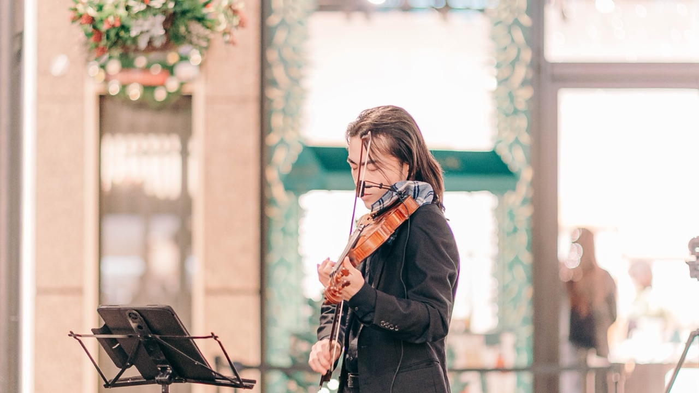
Marunouchi Street Park 2026 winter ストリート演奏のお知らせ
丸の内仲通り
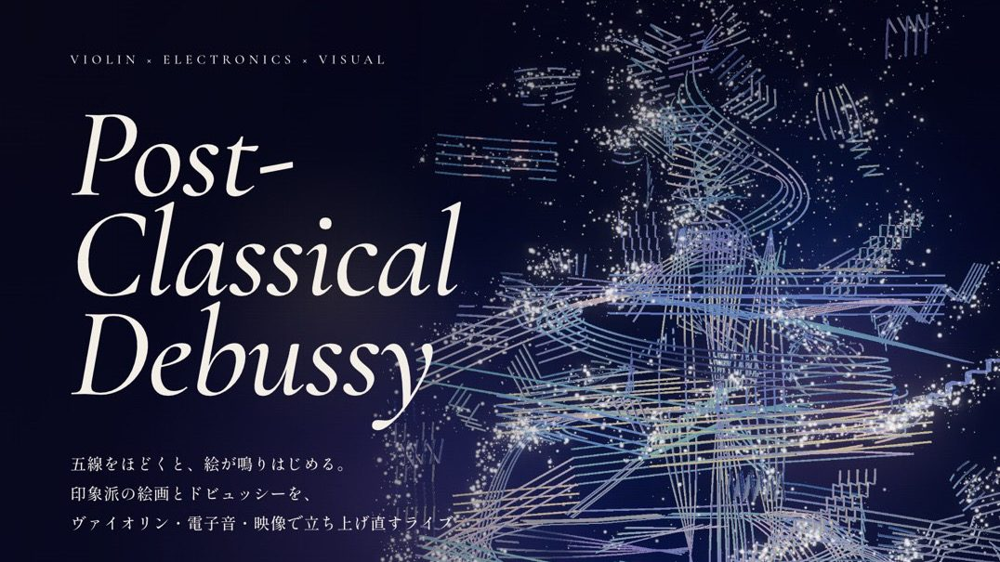
Post-Classical Debussy 出演のお知らせ
美学校（11/14）・100BANCH（11/28）
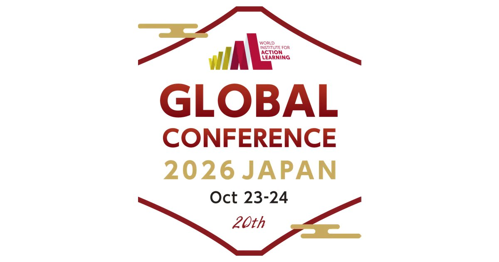
WIAL グローバルカンファレンス 2026 JAPAN ガラディナー 出演のお知らせ
SHIBUYA QWS（渋谷スクランブルスクエア 15F）
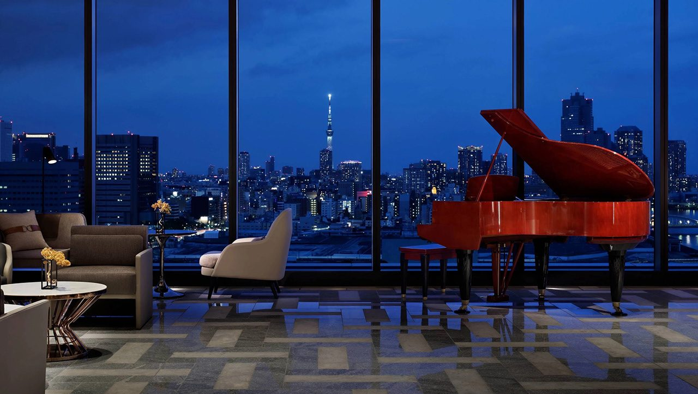
Violin & Piano Showcase 出演のお知らせ
メズム東京 16階ロビー
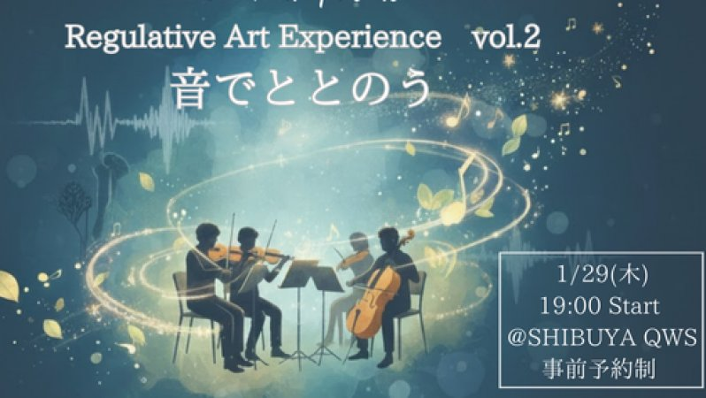
Regulative Art Experience 体験会のお知らせ
SHIBUYA QWS CROSS PARK
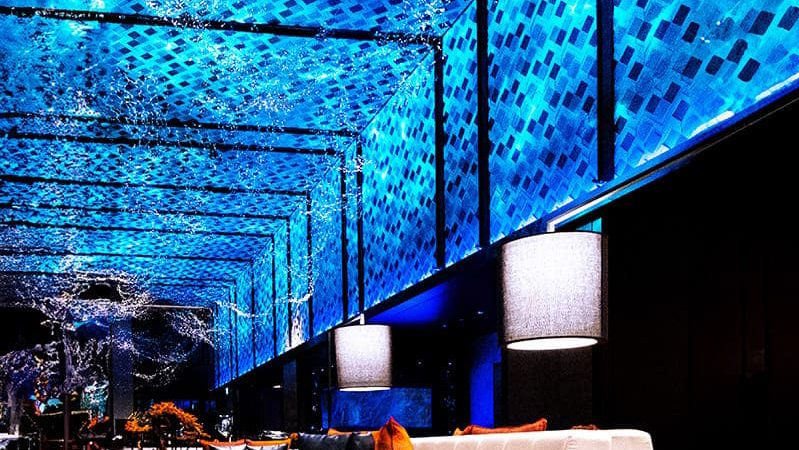
BLUE FANTASY Special Showcase 出演のお知らせ
メズム東京 16階ロビー
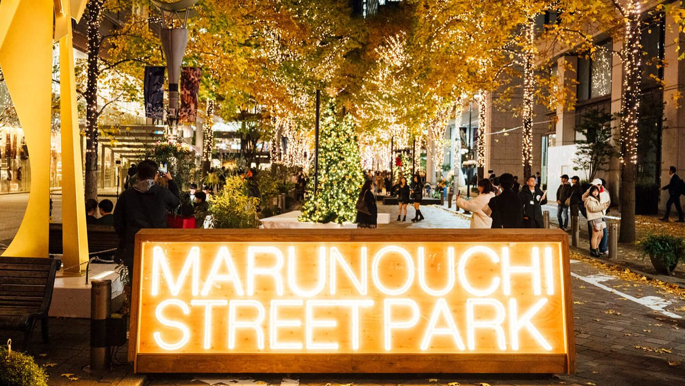
Marunouchi Street Park 2025 winter ストリート演奏のお知らせ
丸の内仲通り
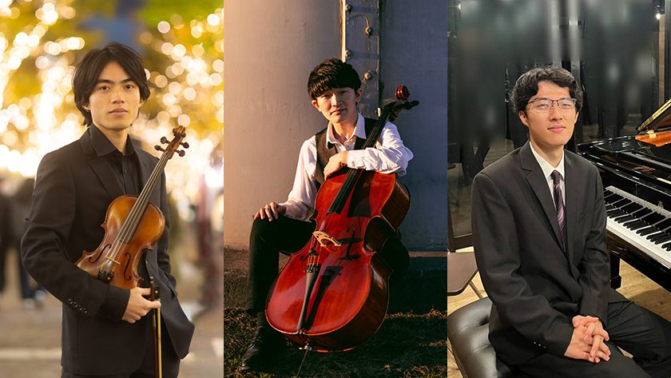
"ブエノスアイレスの四季" Showcase 出演のお知らせ
メズム東京 16階ロビー
"偉大な芸術家の思い出" Showcase 出演のお知らせ
メズム東京 16階ロビー
It's Saturday Night Live ! 出演のお知らせ
外国人記者クラブ THE MAIN BAR
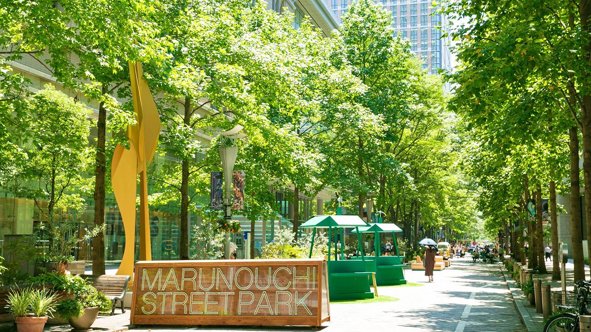
Marunouchi Street Park 2025 summer ストリート演奏のお知らせ
丸の内仲通り
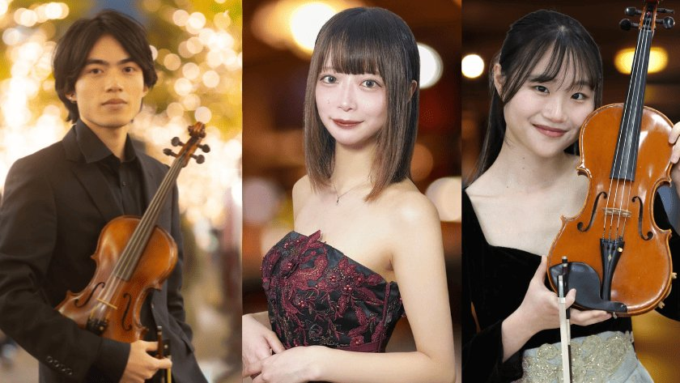
Violin Duo & Piano Showcase 出演のお知らせ
メズム東京 16階ロビー
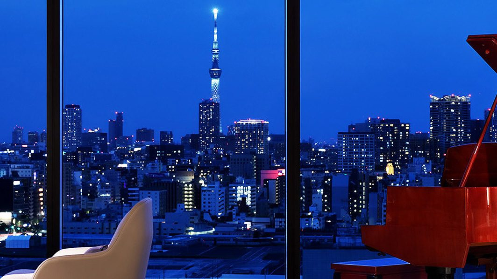
Violin Duo & Piano Showcase 出演のお知らせ
メズム東京
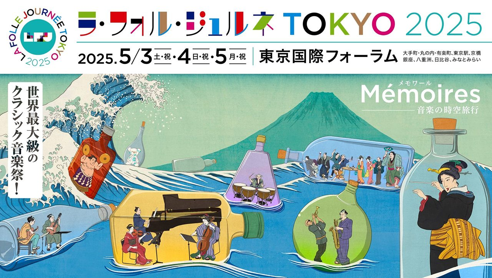
ラ・フォル・ジュルネ TOKYO 2025 出演のお知らせ
新丸ビル1階 北西外構部
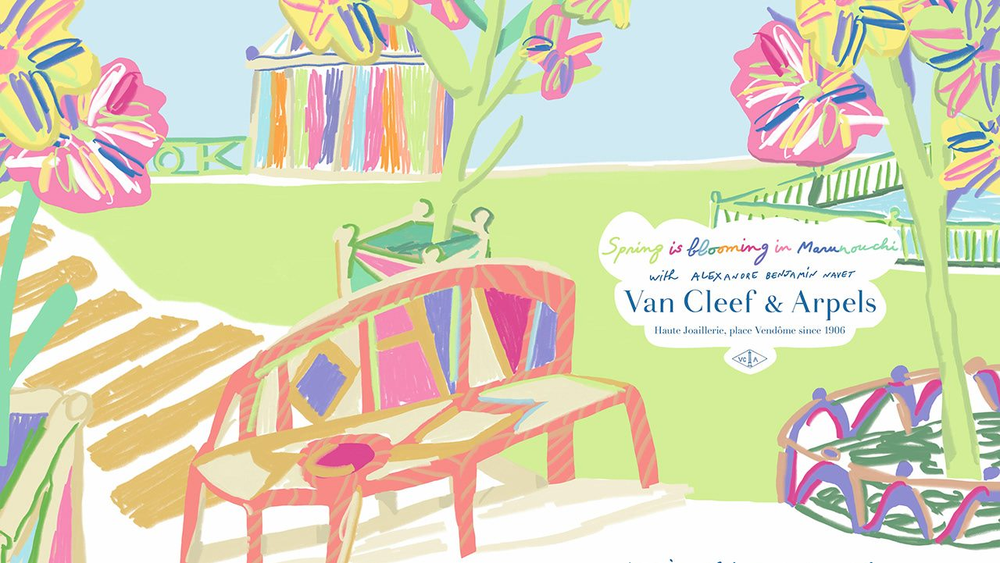
Marunouchi Street Park 2025 spring ストリート演奏のお知らせ
丸の内仲通り
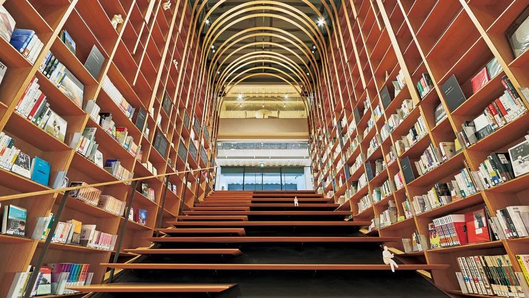
《卒業前最終公演》早稲田大学卒業記念リサイタル開催のお知らせ
早稲田大学村上春樹ライブラリー 地下1階カフェ 橙子猫-Orange Cat-
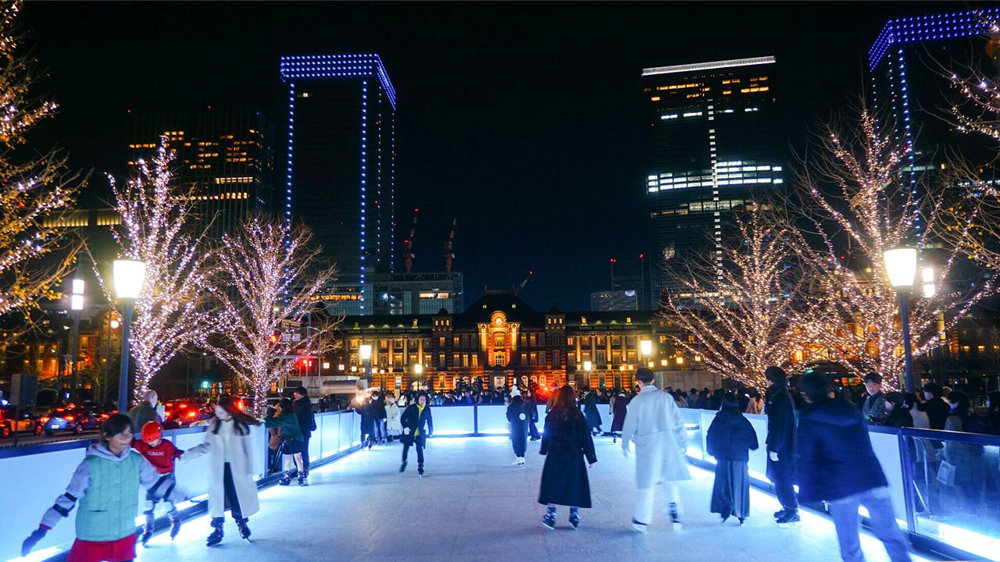
Bright Street Ice Skating Show 生演奏出演のお知らせ
東京駅前 行幸通り

Marunouchi Street Park 2024 winter ストリート演奏のお知らせ
丸の内仲通り
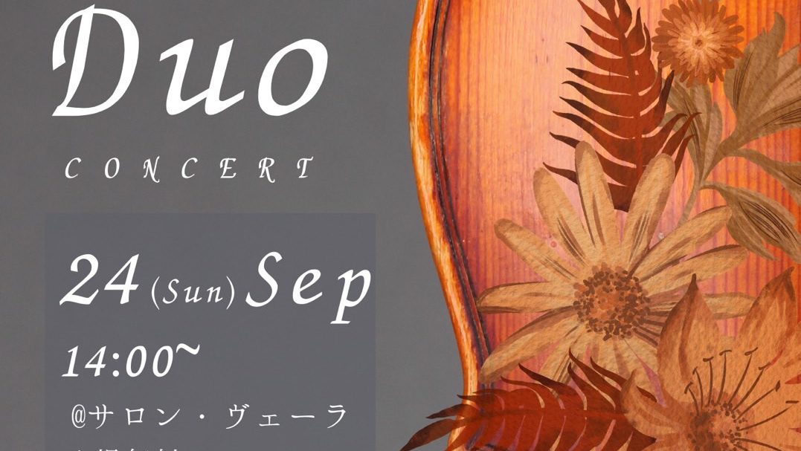
Duo Concert開催のお知らせ
サロン・ヴェーラ
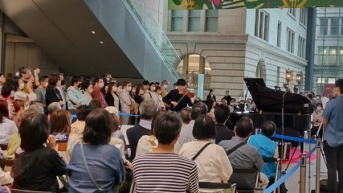